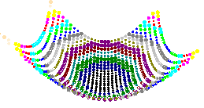

Points.
Let's create an array of the points lying on a paraboloid.
The intervals of changing the coordinates will be:
X lies in the interval of [-15, 15]
Y lies in the interval of [-15, 15]
The step of changing X and Y coordinates will be 1.
The paraboloid equation will be of the following type:
Z = 0.05*X*X+0.03*Y*Y;
Let's calculate the color and thickness of the point depending on the Z coordinate on the following formulas:
point color number from palette = residue of division Z by 100
point thickness = residue of division Z by 3 + 1;
So, the function of creating the necessary points array will look like this:
for (int i=-15;i<15;i++)
{
for (int j=-15;j<15;j++)
{
double pZ = 0.05*i*i+0.03*j*j;
sgCPoint* pnt = sgCreatePoint(i, j, pZ);
sgGetScene()->AttachObject(pnt);
pnt->SetAttribute(SG_OA_COLOR,((int)pZ)%100);
pnt->SetAttribute(SG_OA_LINE_THICKNESS, ((int)pZ)%3+1);
}
}
See also:
sgCPoint sgCPoint::Create sgGetScene sgCScene::AttachObject sgCObject::SetAttribute
Illustration:
